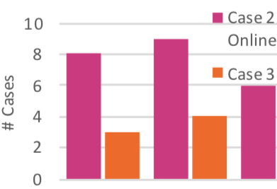

Pipelines Bent, Pipelines Broken: Interdisciplinary Self-Reflection on the Impact of COVID-19 on Current and Future Research (Position Paper)

Venue. BELIV (2020) Workshop
Authors. Priscilla Balestrucci, Katrin Angerbauer, Cristina Morariu, Robin Welsch, Lewis L Chuang, Daniel Weiskopf, Marc O Ernst, Michael Sedlmair
Abstract. Among the many changes brought about by the COVID-19 pandemic, one of the most pressing for scientific research concerns user testing. For the researchers who conduct studies with human participants, the requirements for social distancing have created a need for reflecting on methodologies that previously seemed relatively straightforward. It has become clear from the emerging literature on the topic and from first-hand experiences of researchers that the restrictions due to the pandemic affect every aspect of the research pipeline. The current paper offers an initial reflection on user-based research, drawing on the authors' own experiences and on the results of a survey that was conducted among researchers in different disciplines, primarily psychology, human-computer interaction (HCI), and visualization communities. While this sampling of researchers is by no means comprehensive, the multi-disciplinary approach and the consideration of different aspects of the research pipeline allow us to examine current and future challenges for user-based research. Through an exploration of these issues, this paper also invites others in the VIS-as well as in the wider-research community, to reflect on and discuss the ways in which the current crisis might also present new and previously unexplored opportunities.